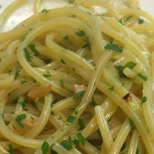

Spaghetti Aglio e Olio

Spaghetti Aglio e Olio is a classic Italian dish that is rich in olive oil, which is healthy and filling. It's very easy to make and requires few ingredients.
So let's get started on this classic dish, be sure to follow the instructions carefully!
- 300 grams of uncooked spaghetti
- 15 grams of Italian parsley
- 7 tablespoons of olive oil
- Half a head of garlic
- Salt
- Boil 3 litres of water in a large pan with a good amount of salt
- Meanwhile mince the half head of garlic
- Chop the parsley very fine
- Add the spaghetti to the water and boil for 10 minutes
- Drain the spaghetti, but keep a little bit of the pasta water
- Add the olive oil and garlic to a skillet and cook until it starts to brown
- Take off the heat, add the spaghetti, parsley and a bit of the pasta water
- Mix and serve!